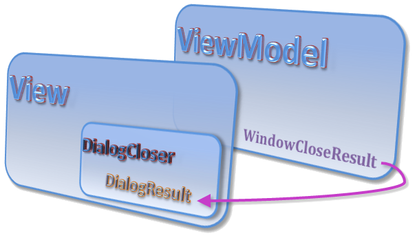
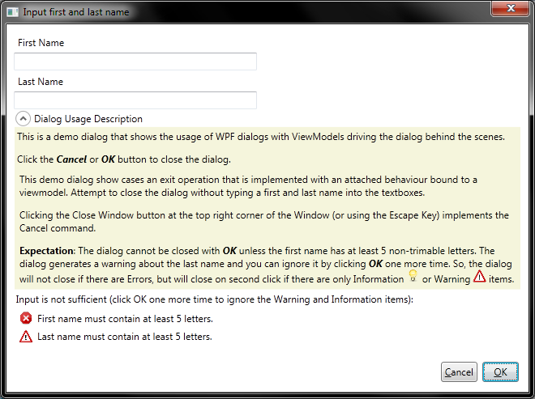
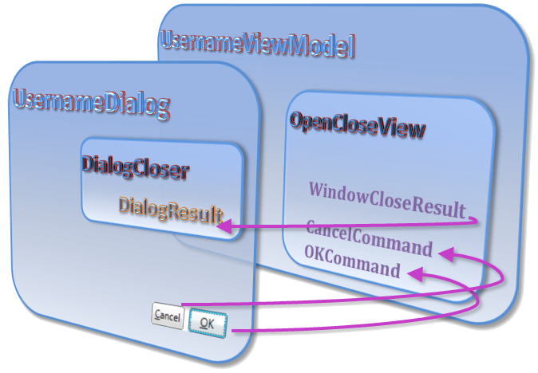
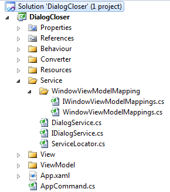

Introduction
This article presents an MVVM conform implmentation of an application that demonstrates how:
- Application Startup/Shutdown and
- Window Open/Close
can be implemented:
I have researched different solutions for closing windows in WPF for a while and I found a number of approaches (which was at first confusing). There are suggestions
on the Internet [2] where an attached behaviour in the MainWindow of an application is used to close a window via an attached property [3] which is bound
to a ViewModel. My sample application takes advantage of that solution and adds on to it. The sample implements:
- Closing an Application's MainWindow (it makes no difference whether this is initiated by the MainWindow, the ViewModel, or the Windows
Operating System - the
App object is always in full control of the situation)
- A dialog specific viewmodel that can be used to drive a dialog and receive a DialogResult
The dialog viewModel also sports a facitility for evaluating user input and producing corresponding messages (information, warning, error etc...)
if some input is not of the expected quality.
Using the code
Application Startup and Shutdown
The sequence for the application start-up is to:
- Instantiate an object of the
App class (which is generated by default in a WPF project) and use a Application_Startup method in that object to:
- Instantiate an
AppViewModel (sometimes also referred to as workspace) - Instantiate an application MainWindow
- Attach the ViewModel to the DataContext of the MainWindow
- and Show the MainWindow
private void Application_Startup(object sender, StartupEventArgs e)
{
AppViewModel tVM = new AppViewModel(); this.win = new MainWindow();
this.win.Closing += this.OnClosing;
tVM.RequestClose += delegate
{
if (this.mRequestClose == false)
{
this.mRequestClose = true;
this.OnClosed(this.win.DataContext as ViewModel.AppViewModel, this.win);
}
};
this.win.DataContext = tVM; this.InitMainWindowCommandBinding(this.win); this.win.Show(); }This startup sequence has the advantage that View and ViewModel have no references of each other but can still work together perfectly. This is especially
advantageous if you have to maintain more than one MainWinodw and you have to instantiate a different MainWindow based on the currently used configuration or a command line option. Command line parameters can also be evaluated in the Application_Startup method. The methode can then prepare the AppViewModel accordingly, and start-up the application in the expected manner (evaluating command line parameters is not implemented in the sample though).
The App class represents an outer shell that is wrapped around the instances of Views and ViewModels of an application. That outer shell should becomes active whenever the application starts up or shuts down.
The application shut down sequence is the inverse of the start-up sequence. That is, the MainWindow tells the AppViewModel that it has received a request for closing the application, the ViewModel evaluates this based on the current situation and either rejects it or confirms the request.
Whether the shutdown sequence can take place or not is routed through the App class:
this.win.Closing += this.OnClosing;
private void OnClosing(object sender, System.ComponentModel.CancelEventArgs e)
{
e.Cancel = this.OnSessionEnding();
}
private bool OnSessionEnding()
{
ViewModel.AppViewModel tVM = this.MainWindow.DataContext as ViewModel.AppViewModel;
if (tVM != null)
{
if (tVM.IsReadyToClose == false)
{
MessageBox.Show("Application is not ready to exit.\n" +
"Hint: Check the checkbox in the MainWindow before exiting the application.",
"Cannot exit application", MessageBoxButton.OK);
return !tVM.IsReadyToClose; }
tVM.OnRequestClose(false);
return !tVM.IsReadyToClose; }
return true;
}
This cascade of events takes place when the user clicks the MainWindow close button. It is slightly, different when the user selects the File>Exit menu option
or presses the ALT+F4 Keys. In this case, the routed command binding in App.xaml.cs is executed:
win.CommandBindings.Add(new CommandBinding(AppCommand.Exit,
(s, e) =>
{
e.Handled = true;
((AppViewModel)win.DataContext).ExitExecuted();
}));
...which invokes the ExitExecuted() method in the AppViewModel class:
if (this.mShutDownInProgress == false)
{
this.mShutDownInProgress = true;
if (this.OnSessionEnding != null)
{
if (this.OnSessionEnding() == true)
{
this.mShutDownInProgress = false;
return;
}
}
this.WindowCloseResult = true; EventHandler handler = this.RequestClose;
if (handler != null)
handler(this, EventArgs.Empty);
}
...the above code calls the OnSessionEnding method in the App class via the delegate method property of the same name. This is done in such a
convoluted way because I want to make sure that all shut down requests are handled by one method (App.OnSessionEnding()).
The shutdown progresses by setting the this.WindowCloseResult = true; which in turn invokes the attached DialogCloser property, which in turn will closes the MainWindow via the bound boolean property (see
MainWindow.xaml).

There is also a third path of execution towards the shutdown of the application, which is to shutdown the Windows Operating system. This event iterates through each application and asks them whether they can shutdown or not. We have set the SessionEnding="App_SessionEnding" property in the App.xaml code to invoke the OnSessionEnding method when Windows shuts down. This way, Windows will no longer shut down if the OnSessionEnding method signals that we still have things to save on disk (unless user forces Windows shut down of course).
To summarize this section. There are several execution paths for shutting down the main window, and through that, the application. All these paths are based on the same evaluation function (OnSessionEnding in App class) and end in one shutdown function OnClosed to make sure that session data can be saved before the application is down for good.
- The main window can send the Closing event to check whether close down is OK via
OnClosing
method in the App class.
- The main window can execute the
AppCommand.Exit routed command (via File>Exit or Alt+F4)
to shutdown the application through the ExitExecuted() method in the AppViewModel
class.
- The Windows operating system can invoke the
App_SessionEnding method in the App
class to gracefully shutdown our application
Dialog Open and Close
The previous section has described one case in which the attached property DialogCloser is used
to close the MainWindow through setting the WindowCloseResult property to true.
This attached behaviour (AB) is actually designed such that it can be used like a DialogResult. It is
null by default and is set to true or false when the user closes
the application via Cancel or OK.
I am using this behaviour to implement a viewmodel that drives a dialog (or any other view) in an MVVM conform
way such that the dialog will not close unless the user has input data of the expected quality. The important
theme here is that we have a viewmodel which drives the view through its complete life cycle without using any
code behind. To do this, we have to construct a ViewModel and View object, attach the former to the DataContext
of the later and subscribe to the Closing event of the view. Further more, View and ViewModel should implement
an OK and Cancel Command to do the corresponding processing when the user clicks either button.
That seems to be a lot of work - so we have to do this for every ViewModel that drives a dialog? Too painful
I hear you saying. Too convoluted some already said [2] claiming that code behind is OK in some cases. Some
of you have a point there but if the complexity could by abstracted away into a neat little class which then
could be used in a viewmodel whenever a dialog (or any other view) is needed to process input based on a OK
or Cancel?
The DialogViewModelBase class implements the above items (and a bit more) needed to drive a dialog
through its life cycle. The class can be used to make user input validation a trivial task.

This dialog is shown through the ShowDialog routed command in the AppCommand class,
which is bound to the ShowDialog method in the AppViewModel class. This method invokes
the ShowDialog method in the Util class. Here, we
instantiate the dialog, attach a copy
of the UsernameViewModel object and initiate the OpenCloseView property.
The UsernameViewModel class instantiates the DialogViewModel class in its
OpenCloseView property. The OpenCloseView property is bound in the
UsernameDialog.xaml.

So, when you click OK or Cancel (or use the Escape key) in the UsernameDialog then you are actually executing a
corresponding command in the DialogViewModel class. Now, executing the OK command invokes the
PerformInputDataEvaluation method, which in turn, invokes an external method (ValidateData)
bound to the EvaluateInputData delegate property.
The signature of that method is to return true or false depending on whether there
are problems in the user input or not. If there are problems, these can be detailled, classified, and returned
with Msg objects in the out List<msg> parameter. This list of messages is then fed
into the ListMessages property of the ObservableCollection<msg> type. These messages
are then visible with icons because the XAML of the dialog makes use of the
CountToVisibilityHiddenConverter to hide the messages StackPanel when there are no messages. And it
also uses the MsgTypeToResourceConverter to convert the category of a message into an image resource
that can be displayed in the list of messages [4].
This input evaluation and message listing can be disabled by simple setting the EvaluateInputData
delegate property to null. The dialog will then close via ViewModel when the IsReadyToClose is true.
Part 2 Using a DialogService
I received controversial feedback when I published the first version of this article. Some
people were missing a dialog service implementation (I get to that in this section) and others
were saying this approach of implementing dialogs is an over-design. Looking back on it,
and having seen some other articles on similar topics [5], - I have realized that I stumbled
into a "CodeProject trap" that snaps shut because some topics, such as, MVVM,
are not so well defined and some patterns are quit different when being applied to solve
different requirements.
My initial idea was to simply publish a small code example that could be used to implement
simple WPF applications. Although, the requirements:
- unit test
- code re-use, and
- seperation of concerns
[6] are more than useful problems to solve, they were not part of my initial concerns.
I have reviewed a lot of articles on MSDN, CodeProject, and elsewhere since then and have
come to the conclusion that a dialog service is a more than a useful exercise.
The key-terms to know are "Inversion of Control" (IOC) and Dependency Injection (DI).
Just enter "IOC", "Dependency Injection", or "DialogService"
into the search engine here at CodeProject or elsewhere and you will find numerous explanations
on that topic.
I followed the IOC track and found there are lots of frameworks on that topic:
Unity, MEF, StructureMap, Castle.Windsor, AutoFac, Chinch, LinFu, Hiro, and Ninject,
which explains why people are so tired of being shown yet another framework  " />
" />
I am not going to implement and document yet another framework in this article.
Instead, we are going to look at a simplified implementation of a DialogService to explain
and document the IOC service pattern with a sample implementation. I found such a sample
implementation here at codeproject [5], simplified it a little bit more, and applied it to
my sample code as described next.
Disore's original implementation [5] implements a few services to define interfaces for:
- Reading Person information from XML,
- Displaying MessageBox contents,
- Using common dialogs, such as, Open File or Folder Browsing, and
- Using ViewModels with a DialogService.
I was interested in the last point 'Using ViewModels with a "DialogService", only.
So, I downloaded his source code and removed everything that was unnecessary for the
DialogService implementation. This left me with the classes in the "Service"
and "WindowViewModelMapping" folder:

We like simple things, right? It turns out that using these classes for the first time is simple (thanks to Disore's article and source code). But understanding
their correct application in a non-intimidating way is all but simple. So, lets walk through the code
to see what we can learn here.
The ServiceLocator class is static which means that it is initialized and
loaded as soon as the .Net Framework loads the corresponding namespace. The dialog service starts its
timely existence in the App.Application_Startup of the App class.
The following lines:
ServiceLocator.RegisterSingleton<IDialogService, DialogService>();
ServiceLocator.RegisterSingleton<IWindowViewModelMappings, WindowViewModelMappings>();
initialize two services:
- A DialogService - which is used to create and show a View for a ViewModel, and
- A WindowViewModelMappings service to associate (map) a ViewModel class with its corresponding View class.
We can register these services in any way we would like but we can (obviously) not instantiate a
View for a ViewModel unless there is a map (association) for both classes. Disore [5] shows different
ways for creating this map in his article. In our case, though, we use the below map:
public WindowViewModelMappings()
{
mappings = new Dictionary<type,>
{
{ typeof(UsernameViewModel), typeof(UsernameDialog)}
};
}
to associate the UsernameViewModel class with the UsernameDialog class
at run-time. This comes to life in the below AppViewModel function:
public void ShowUserNameDialog()
{
UsernameViewModel dlgVM = null;
try
{
dlgVM = new UsernameViewModel(this.mTestDialogViewModel);
dlgVM.InitDialogInputData();
dialogService.ShowDialog(this, dlgVM);
if (dlgVM.OpenCloseView.WindowCloseResult == true)
{
Console.WriteLine("Dialog was OK'ed.");
this.mTestDialogViewModel.FirstName = dlgVM.FirstName;
this.mTestDialogViewModel.LastName = dlgVM.LastName;
}
else
Console.WriteLine("Dialog was Cancel'ed.");
}
catch (Exception exc)
{
MessageBox.Show(exc.ToString());
}
}
The call to InitDialogInputData() could be abstracted away into the interface
of the dialog service but I am not going into that because, you feel comfortable with this concept,
you should just use one of the 10 IOC containers listed above.
Summarizing the concept - there is one static class, the ServiceLocator [7] which is used
to register the DialogService class and the WindowViewModelMappings class.
The result of that registration is stored in a dictionary object in the ServiceLocator class:
private static Dictionary<Type, ServiceInfo> services = new Dictionary<Type, ServiceInfo>();
The call to the dialogService dialogService.ShowDialog(this, dlgVM); then pulls out
the mapping service from the ServiceLocator dictionary which in turn pulls out the
corresponding view from the WindowViewModelMappings dictionary:
public bool? ShowDialog(object ownerViewModel, object viewModel)
{
Type dialogType = windowViewModelMappings.GetWindowTypeFromViewModelType(viewModel.GetType());
return ShowDialog(ownerViewModel, viewModel, dialogType);
}
Now we have an implementation that makes sure that Views and ViewModels are not aware of each other.
Thats good for unit testing - which turns out to be simpler than you think. Just get, for example,
Disore's source code, download and install the NUnit setup and use the Graphical GUI to get started with unit testing in 5 minutes.
Using an implementation like this uncovers other possebilities as well. Consider, for example,
an application with an advanced and a basic view, -or an application in which you need a viewing
mode or an editing mode. You could simply implement such run-time changes by mapping/re-mapping
views at run-time.
Points of Interest
I have learned to use delegate methods to execute a flexible piece of code within a complex system, exposing thus, exactly what I need to expose while keeping
the complexity of the overall system hidden. I also learned that common functions, such as, driving a dialog through its lifecycle can be encapsulated
in a class, which can be instantiated when that dialog (or view) is being shown. Using a ServiceLocator can drive this development even further towards a professional implementation. I now have pattern that I can simply apply without having to care about Window Close, Closing, or any other events, because I could just implement:
- the
OpenCloseView property, the Input Evaluation method, and the ShowDialog method
- plus the required
XAML
and I am done with another dialog. Oh, and all that is done in an MVVM conform fashion. Now why would that not be a good approach?
References
History
- 09. August 2012 Added DialogService implementation section and advanced code sample
- 30 June 2012: Initial version
- 3rd of July 2012 (fixed a bug in OnClosing method and moved util.ShowDialog out of ViewModel namespace